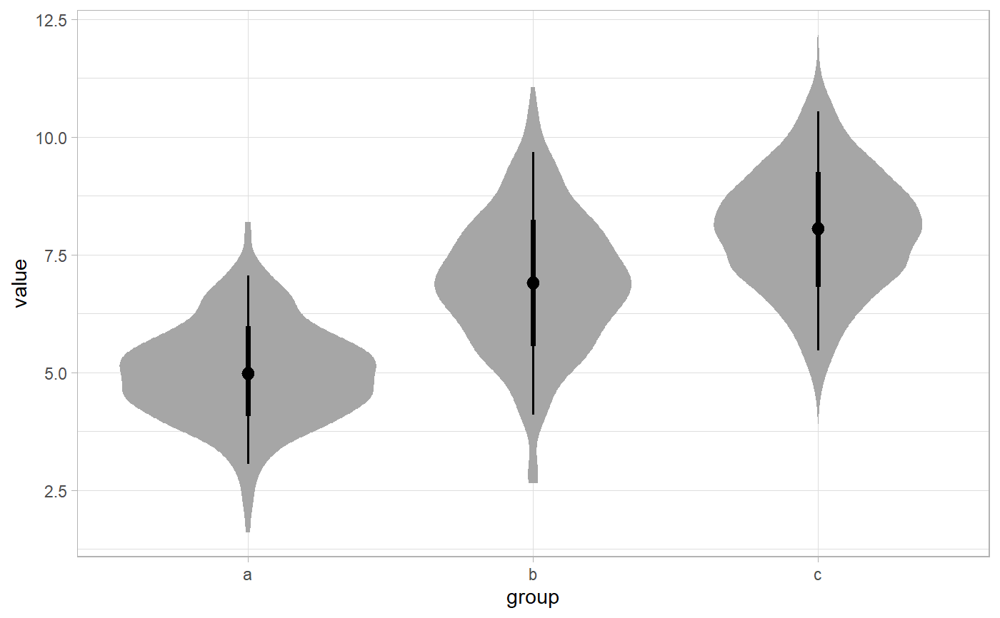
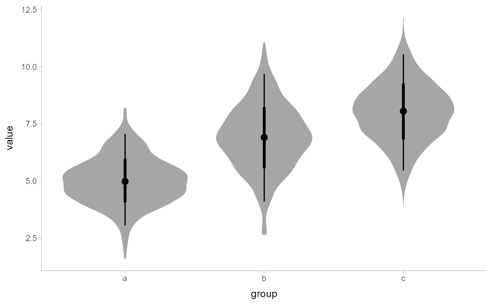

R/stat_sample_slabinterval.R
stat_sample_slabinterval.RdStats for computing densities and CDFs + intervals from samples for use with
geom_slabinterval(). Useful for creating eye plots, half-eye plots,
CCDF bar plots etc.
stat_sample_slabinterval( mapping = NULL, data = NULL, geom = "slabinterval", position = "identity", ..., slab_type = c("pdf", "cdf", "ccdf", "histogram"), adjust = 1, trim = TRUE, breaks = "Sturges", outline_bars = FALSE, orientation = NA, limits = NULL, n = 501, interval_function = NULL, interval_args = list(), point_interval = median_qi, .width = c(0.66, 0.95), na.rm = FALSE, show.legend = c(size = FALSE), inherit.aes = TRUE ) stat_halfeye(...) stat_eye(..., side = "both") stat_ccdfinterval( ..., slab_type = "ccdf", justification = 0.5, side = "topleft", normalize = "none" ) stat_cdfinterval( ..., slab_type = "cdf", justification = 0.5, side = "topleft", normalize = "none" ) stat_gradientinterval( mapping = NULL, data = NULL, geom = "slabinterval", position = "identity", ..., justification = 0.5, thickness = 1, show.legend = c(size = FALSE, slab_alpha = FALSE), inherit.aes = TRUE ) stat_histinterval(..., slab_type = "histogram") stat_slab( mapping = NULL, data = NULL, geom = "slab", position = "identity", ..., show.legend = NA, inherit.aes = TRUE )
| mapping | Set of aesthetic mappings created by |
|---|---|
| data | The data to be displayed in this layer. There are three options: If A A |
| geom | Use to override the default connection between
|
| position | Position adjustment, either as a string, or the result of a call to a position adjustment function. |
| ... | Other arguments passed to |
| slab_type | The type of slab function to calculate: probability density (or mass) function ( |
| adjust | If |
| trim | If |
| breaks | If |
| outline_bars | If |
| orientation | Whether this geom is drawn horizontally ( |
| limits | Limits for |
| n | Number of points at which to evaluate |
| interval_function | Custom function for generating intervals (for most common use cases the |
| interval_args | Additional arguments passed to |
| point_interval | A function from the |
| .width | The |
| na.rm | If |
| show.legend | Should this layer be included in the legends? Default is |
| inherit.aes | If |
| side | Which side to draw the slab on. |
| justification | Justification of the interval relative to the slab, where |
| normalize | How to normalize heights of functions input to the |
| thickness | Override for the |
A highly configurable stat for generating a variety of plots that combine a "slab" that summarizes a sample plus an interval. Several "shortcut" stats are provided which combine multiple options to create useful geoms, particularly eye plots (a combination of a violin plot and interval), half-eye plots (a density plus interval), and CCDF bar plots (a complementary CDF plus interval). These can be handy for visualizing posterior distributions in Bayesian inference, amongst other things.
The shortcut stat names follow the pattern stat_[name].
Stats include:
stat_eye: Eye plots (violin + interval)
stat_halfeye: Half-eye plots (density + interval)
stat_ccdfinterval: CCDF bar plots (CCDF + interval)
stat_cdfinterval: CDF bar plots (CDF + interval)
stat_gradientinterval: Density gradient + interval plots
stat_histinterval: Histogram + interval plots
stat_pointinterval: Point + interval plots
stat_interval: Interval plots
These stats support the following aesthetics:
x
y
datatype
thickness
size
group
In addition, in their default configuration (paired with geom_slabinterval()) the following aesthetics are supported by the underlying geom:
datatype
alpha
colour
linetype
fill
shape
stroke
point_colour
point_fill
point_alpha
point_size
size
interval_colour
interval_alpha
interval_size
interval_linetype
slab_size
slab_colour
slab_fill
slab_alpha
slab_linetype
y
ymin
ymax
x
xmin
xmax
width
height
thickness
group
See examples of some of these aesthetics in action in vignette("slabinterval").
Learn more about the sub-geom aesthetics (like interval_color) in the scales documentation.
Learn more about basic ggplot aesthetics in vignette("ggplot2-specs").
x or y: For slabs, the input values to the slab function.
For intervals, the point summary from the interval function. Whether it is x or y depends on orientation
xmin or ymin: For intervals, the lower end of the interval from the interval function.
xmax or ymax: For intervals, the upper end of the interval from the interval function.
f: For slabs, the output values from the slab function.
n: For slabs, the number of data points summarized into that slab.
See geom_slabinterval() for more information on the geom these stats
use by default and some of the options they have. See stat_dist_slabinterval()
for the versions of these stats that can be used on analytical distributions.
See vignette("slabinterval") for a variety of examples of use.
library(dplyr) library(tidyr) library(ggplot2) # consider the following example data: set.seed(1234) df = tribble( ~group, ~subgroup, ~value, "a", "h", rnorm(500, mean = 5), "b", "h", rnorm(500, mean = 7, sd = 1.5), "c", "h", rnorm(500, mean = 8), "c", "i", rnorm(500, mean = 9), "c", "j", rnorm(500, mean = 7) ) %>% unnest(value) # here are vertical eyes: df %>% ggplot(aes(x = group, y = value)) + stat_eye()# note the sample size is not automatically incorporated into the # area of the densities in case one wishes to plot densities against # a reference (e.g. a prior generated by a stat_dist_... function). # But you may wish to account for sample size if using these geoms # for something other than visualizing posteriors; in which case # you can use stat(f*n): df %>% ggplot(aes(x = group, y = value)) + stat_eye(aes(thickness = stat(f*n)))# see vignette("slabinterval") for many more examples.